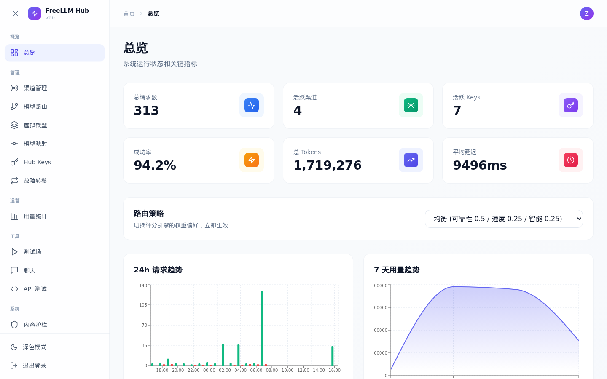
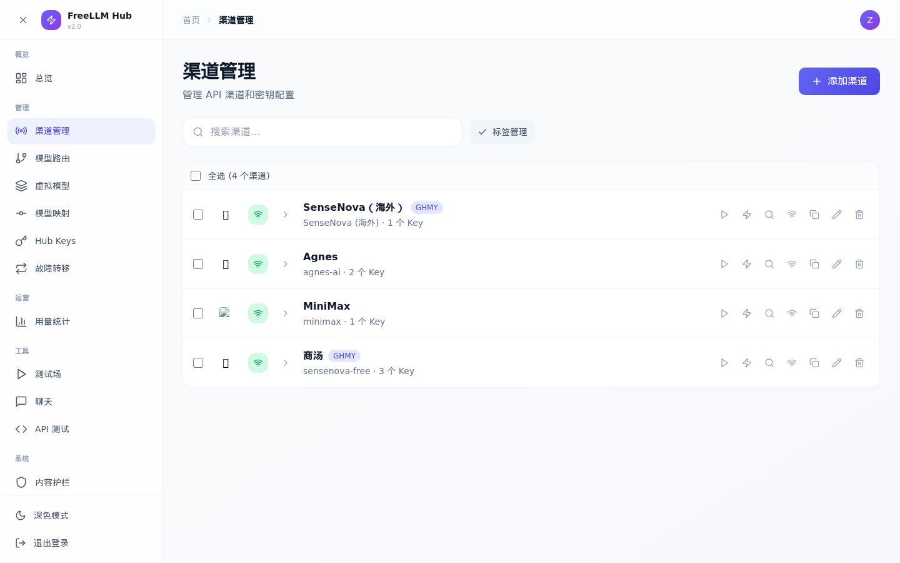
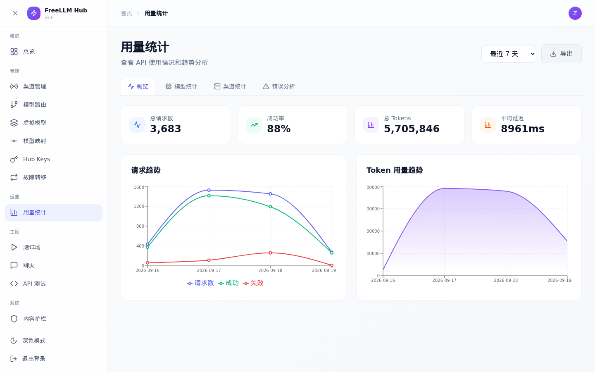
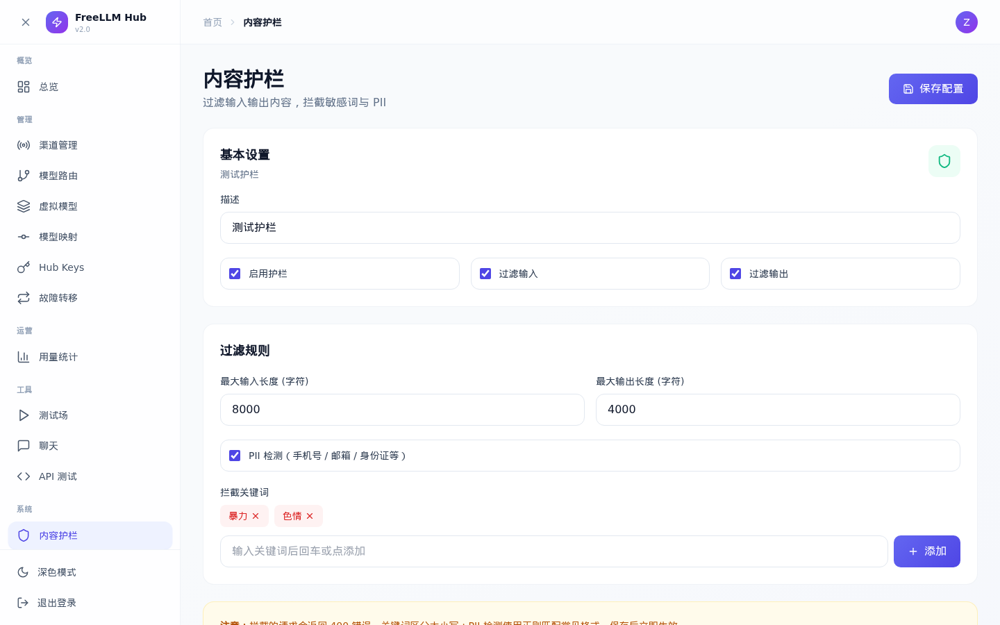

OpenAI、Anthropic、Gemini、DeepSeek、商汤、MiniMax……统一收进一个自托管网关。给所有 Agent 工具一个 Base URL + 一个 Key，即插即用；故障自动转移、配额自动避让、用量一目了然。 OpenAI, Anthropic, Gemini, DeepSeek, SenseNova, MiniMax… all behind one self-hosted gateway. One Base URL, one key, for every agent tool — with automatic failover, quota awareness and full analytics.
$ docker run -d -p 3030:3030 \ -v ./data:/app/data freellm-hub ✓ healthy migrations_pending=0 version=2.0.0 $ curl $HUB/v1/chat/completions \ -H "Authorization: Bearer fh_..." \ -d '{"model":"sensenova-6.8-flash-lite",...}' 200 → 商汤 / sensenova · 华东 / k-03 · 720ms 200 → stream 128 tok/s [DONE]
不是又一个"API 转发器"——从密钥加密、智能路由到告警回滚，生产环境需要的每一环都补齐了。 Not just another proxy — from key encryption and smart routing to alerts and rollback, every production box is ticked.
Chat（含流式 SSE）、Anthropic Messages、Responses、Embeddings、图像、音频、视频、模型列表——12 个客户端接口，任何兼容 SDK 即插即用。 Chat (SSE streaming), Anthropic Messages, Responses, embeddings, images, audio, video, models — 12 client endpoints any compatible SDK can use.
Thompson 采样动态评分，4 种内置策略（均衡 / 最智能 / 最快 / 最可靠）+ 手动排序；主模型失败自动切备用链，三层跳过，60 秒预算封顶。 Thompson-sampling scoring, 4 presets (balanced / smartest / fastest / reliable) plus manual priority; failed models fall through a backup chain under a 60s budget.
429/402/5xx 自动冷却并阶梯升级时长，探活 1 分钟早恢复；黑名的 Key 30 分钟自动回炉；rpm/rpd/tpm 限额随时可设。 Auto-cooldown on 429/402/5xx with escalating durations, 1-minute probe recovery, blacklisted keys rehabilitate after 30 minutes; rpm/rpd/tpm limits included.
输入/输出双向过滤：关键词拦截、PII 检测、长度上限，可按需开关并即时生效。 Bidirectional input/output filtering: keyword blocking, PII detection and length limits — switchable, effective immediately.
上游 Key 全部 AES-256-GCM 加密落盘（主密钥独立文件），管理员密码 Argon2id，Hub Key 支持模型白名单，全管理端点强制鉴权。 Upstream keys encrypted at rest with AES-256-GCM, Argon2id admin passwords, per-key model allow-lists, every admin endpoint authenticated.
每次请求入库可追踪，失败归因清晰；按模型 / 渠道 / 错误多维统计，24 小时趋势一屏看完。 Every request logged and traceable with clear failure attribution; model / channel / error analytics with 24h trend charts.
Key 被拉黑、备份失败、全部不可用……关键事件 10 分钟去重后推送到飞书 / 企业微信 / 钉钉 / 任意 Webhook。 Key blacklisted, backup failed, everything down… critical events (10-min dedup) pushed to Feishu / WeCom / DingTalk / any webhook.
一键部署脚本：构建 → 孤儿校验 → 推送 → 健康门禁，任一步失败自动回滚；每日备份落在数据卷之外，恢复手册经过实机演练。 One-click deploy: build → orphan check → push → health gate with auto-rollback; daily backups outside the data volume, restore runbook battle-tested.
14 个页面完整覆盖渠道、密钥、路由、统计与测试场；移动端完全适配 + 暗色模式。 14 pages covering channels, keys, routing, analytics and playground; fully mobile-responsive with dark mode.
四层防线各司其职：鉴权 → 路由 → 护栏 → 缓存；上游 Key 解密只发生在内存里。 Four layers, clear duties: auth → routing → guard → cache. Upstream keys are decrypted in memory only.
首次访问会引导你注册管理员 → 添加 Provider → 创建 Hub Key，然后把 Base URL 填进任何工具。 First visit walks you through admin signup → add a provider → create a hub key, then paste the Base URL into any tool.
$ mkdir -p ~/freellm-hub && cd ~/freellm-hub $ docker run -d \ --name freellm-hub \ --restart unless-stopped \ -p 3030:3030 \ -v $(pwd)/data:/app/data \ -e TZ=Asia/Shanghai \ ghcr.io/zhibushi001/freellm-hub:v2.0.0 # 等几秒后访问 $ open http://localhost:3030
$ git clone <repo-url> freellm-hub && cd freellm-hub $ npm install # 一键: 构建 → 孤儿校验 → 备份回滚点 → 推送 → 健康门禁 (失败自动回滚) $ ./scripts/deploy.sh [deploy] ✓ 部署成功 — healthy, migrations_pending=0 # 日常回归 $ npm test # 208 用例: 单元 + e2e
| 工具类型Tool type | Base URL | API Key |
|---|---|---|
| OpenAI 兼容（Cline、ChatBox、Hermes…）OpenAI-compatible (Cline, ChatBox, Hermes…) | http://your-hub:3030/v1 | fh_… |
| Anthropic 兼容（Claude Code…）Anthropic-compatible (Claude Code…) | http://your-hub:3030 | fh_… |
| OpenAI Responses（Codex CLI…）OpenAI Responses (Codex CLI…) | http://your-hub:3030/v1 | fh_… |
移动端适配 + 暗色模式，14 个页面。Mobile-ready with dark mode, 14 pages.




| 关注点Concern | 每个工具直连Direct, per tool | 重量级网关Heavy gateways | FreeLLM Hub |
|---|---|---|---|
| 配置成本Setup cost | 每处都配一遍 / repeat everywhere | Postgres/Redis/多实例 / Postgres/Redis/multi-node | 一个 URL + 一把 KeyOne URL + one key |
| 已有 Key 复用Reuse existing keys | 可以Yes | 通常要充值到平台Usually prepaid credits | 原样收进来Bring your own |
| 故障转移 / 冷却Failover / cooldowns | ✗ | ✓ | ✓ 含自动回炉与探活+ self-healing |
| 告警 / 一键回滚部署Alerts / rollback deploys | ✗ | 看具体项目Depends | ✓ Webhook + 自动回滚Webhook + auto-rollback |
| 部署门槛Deployment | — | 多组件Multiple services | 单容器 + SQLiteOne container + SQLite |
项目总览 / 双语快速上手Overview / bilingual quick start
安装与首次配置Install & first-time setup
部署 / 升级 / 备份 / 回滚Deploy / upgrade / backup / rollback
灾难恢复手册（已实机演练）Disaster recovery (battle-tested)
当前架构与模块Current architecture & modules
版本与迭代记录Release & iteration history
路由、缓存、护栏、备份、通知、一键部署与回滚。Routing, cache, guardrails, backups, alerts, one-click deploys with rollback.
开放文档自动生成、指标接入监控体系。Auto-generated API docs and Prometheus metrics.
多用户、团队空间、SSO 与配额计费。Multi-user, team spaces, SSO and usage billing.